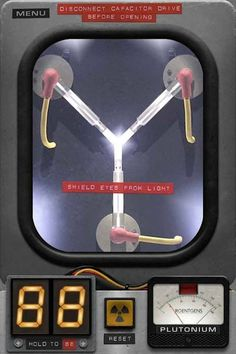
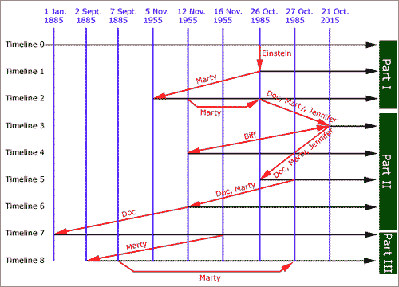

¿Cómo se juega?
🸠Elige con quién vas a viajar en el Delorean
🕹️ Selecciona "Empezar a Jugar"
💡 Elige si quieres jugar con o sin pistas
🲠Tira los dados haciendo click en cada uno
🪠Tienes 7 tiradas en total para intentar que tu combinación de dados durante el viaje en el tiempo no destruya la galaxia
💫 No puedes encontrarte con tu otro tú o con alguien que aún no exista, no puede aparecer un complemento incoherente con la fecha ni estar en un lugar que todavÃa no exista...
🛹 DesafÃa a la lÃnea temporal!!
1. Elige con qué personaje quieres viajar en el tiempo:
Marty
Doc
Biff
Jennifer
Empezar a jugar
OFF
ON
Pistas
2. ¡Ahora tira los dados!
Año
Lugar
Personaje al que te vas a encontrar
Complemento
3. Contador de tiradas
Volver a empezar

Volver a empezar
